Chats, agents and models
A Chat is where you talk to an agent: an AI program that does the work you ask in the VM, in the app of its tab, with its files and its command line. You pick the agent and the model it thinks with, and you can switch both in the middle of a Chat without losing the conversation.
A Chat needs a model. With the published Wazza OS, add an API key, log in with a plan you have, or sign in to a Wazza OS account first: Sign in, plans and API keys. The screenshots on this page use an OpenRouter key added in Sign in.
Open a Chat#
- A Chat on its own: + › Apps › Chat (Ask any agent), the first of the Main apps. The tab is all Chat, for questions, files and command-line work in the VM.
- A Chat next to an app: every app tab has its own Chat on its left (Tabs). Its agent works in that app.
A new Chat starts with the default agent and model of Settings › Chats & agents › New Chats. The line above the composer says what it starts on when no default is saved.
Write to the agent#
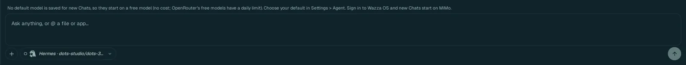
1 2 3 4Type in Ask anything, or @ a file or app…. Enter sends; Shift+Enter starts a new line.
+ adds files to your message (below).
The agent and model of this Chat; a click opens the model window.
Send. While the agent answers, this button becomes Stop.
Add files#
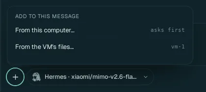
- From this computer…: your computer's file chooser opens (asks first: nothing is sent before you pick). The files you pick are copied into the VM for the agent and attached to your message.
- From the VM's files…: the Explorer opens on this Chat's VM; drag files from it onto the Chat. They are attached by their path in the VM: nothing is copied. Known issue in the published build (0.2.0): that drag is not attached yet (fixed in the next release); type @ and pick the file instead (below).
- Or drop files from your file manager on the Chat, or paste them or an image: every way is in Move files.
Mention a file or an app#
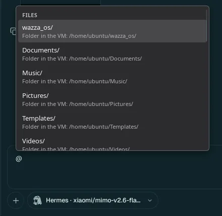
Type @: a list of the VM's files and folders (and apps) opens; keep typing to narrow it, then pick one with the arrows and Enter or a click. The agent gets its exact path. wazza_os is the folder the VM shares with Wazza OS (Files and sharing).
Slash commands#
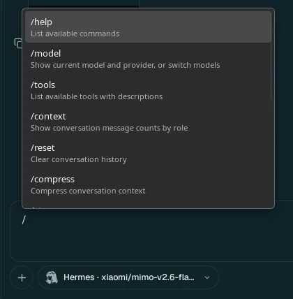
Type / at the start of the box: the agent's own commands. They differ per agent; for Hermes:
/help (list the commands), /model (show or switch the model), /tools (list its tools),
/context (message counts), /reset (clear the conversation), /compress (sum up the
conversation to save room), and more down the list.
Follow the agent's work#
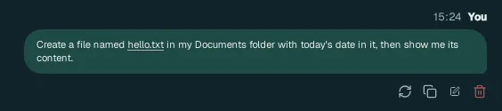
1 2
3
4
5
6
7
2
3
4
5
6
7Your message. Its buttons: retry (ask again), copy, edit (change it and send again), delete.
Who answers: the provider and the route (here OpenRouter (your key in Sign In)) and the model.
Thinking: the model's reasoning, folded (click to read it).
A tool the agent used: here Bash, its commands and what they printed. Tools of the app, of Wazza OS and of Drive show the same way.
The message: the answer, with code blocks (copy button) and previews of files it made.
A preview of a file in the VM: click to open it larger.
The answer's buttons: copy, copy as an image, retry, fork (a new Chat that starts from here), delete.
- Stop: the send button while the agent works. It stops the turn; the Chat says Stopped.
- Write while it works: what you send then waits in a queue and goes when the turn ends.
- The tab name becomes your first message, so you find the Chat again in the tab strip and in History.
- The context meter (2% context, bottom right) shows how full the model's memory of this Chat is (Compact a long Chat).
Choose the agent and the model#
Click the agent and model chip (bottom left of the Chat). The model window opens on Model.
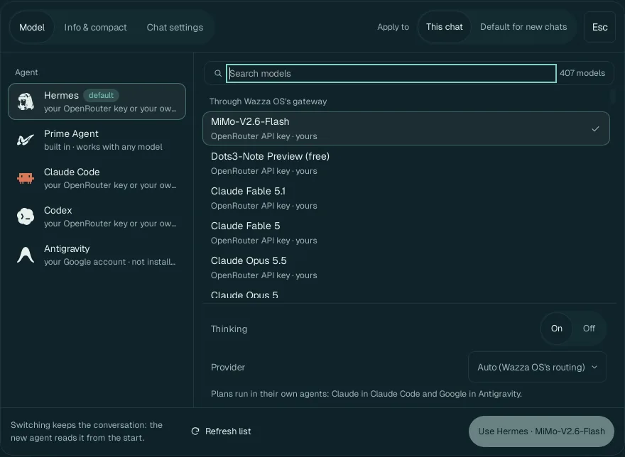
1 2 3 4 5 6 7 8Apply to: This chat, or Default for new chats (the same as Settings › New Chats).
The agent (default marks the one new Chats use). Under each: what it needs.
Search models: type part of a name (for example mimo, claude, free); the count says how many match.
The models this agent can use now, grouped by how it reaches them (Through Wazza OS's gateway; your plans; your custom APIs), each with who pays (OpenRouter API key · yours). Grey rows say why they cannot be used with this agent.
Thinking On/Off: whether the model reasons before answering (better on hard tasks, slower and costlier). Shown only for models that can.
Provider: for an OpenRouter model, Auto (Wazza OS's routing) or one company that serves it.
Refresh list reads the models again (after you added a key, for example).
Use … applies it. Switching keeps the conversation: the new agent reads it from the start.
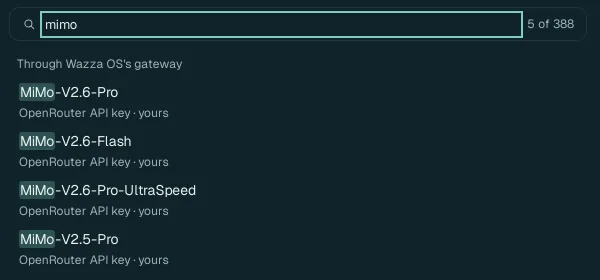
The agents#
| Agent | What it is | What it needs |
|---|---|---|
| Hermes | Nous Research's open agent, Wazza OS's default. Runs in the VM, works with any model. | A model: an API key, a plan login that reaches it, a custom API, or a Wazza OS account. |
| Prime Agent | Wazza OS's own agent, built in; works with any model. | The same. |
| Claude Code | Anthropic's coding agent. | Your Claude plan (Log in with Claude), or any model through Wazza OS's gateway. |
| Codex | OpenAI's coding agent. | Your ChatGPT plan (Log in with ChatGPT), or any model through the gateway. |
| Antigravity | Google's agent. Installed the first time you pick it (not installed until then). | Your Google account plan (Log in with Google). |
Every agent gets the same Wazza OS tools (apps, Drive, files, other agents): see The Wazza OS MCP.
Compact a long Chat#
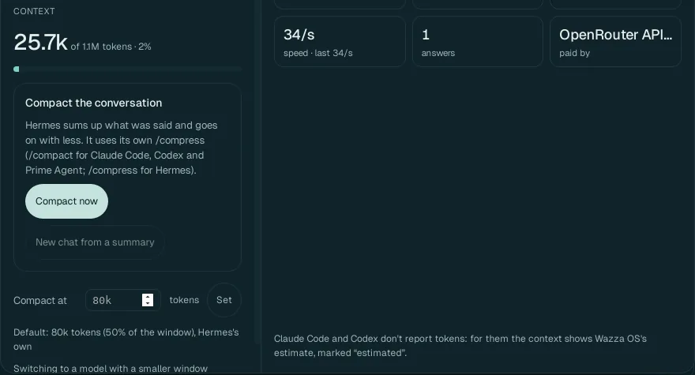
A model remembers a limited amount of a conversation (its context window). The tab shows how much of it this Chat uses (25.7k of 1.1M tokens), and:
- Compact now: the agent sums up what was said and goes on with less (Hermes uses its
/compress, Claude Code, Codex and Prime Agent their/compact). - New chat from a summary: a new Chat that starts from a summary of this one.
- Compact at … tokens › Set: compact by itself at that size (default 80k tokens, 50 % of the window, or the agent's own rule).
- Use in this chat: tokens in and out, cache hits, speed, answers, and who pays. Claude Code and Codex do not report tokens: for them the numbers are Wazza OS's estimate, marked estimated.
Chat settings#
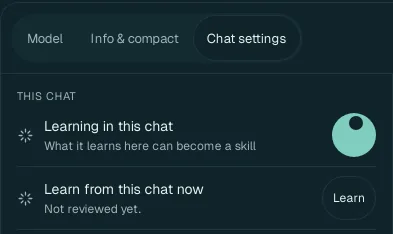
| Option | What it does |
|---|---|
| Learning in this chat (default: on) | What this Chat teaches can become a skill (How Wazza OS learns). Turn it off for a private or throwaway Chat. |
| Learn from this chat now | Learn reviews this Chat now instead of waiting. |
| Persona | None, or a persona (3D artist (Blender), Film director…): its skills load in this Chat, and the persona learns from it (Personas). |
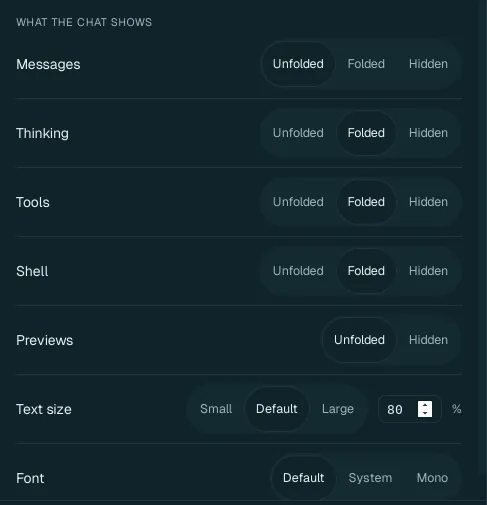
| What the chat shows | Values (default in bold) |
|---|---|
| Messages | Unfolded, Folded, Hidden |
| Thinking | Unfolded, Folded, Hidden |
| Tools | Unfolded, Folded, Hidden |
| Shell | Unfolded, Folded, Hidden |
| Previews | Unfolded, Hidden |
| Text size | Small, Default, Large, or a percentage |
| Font | Default, System, Mono |
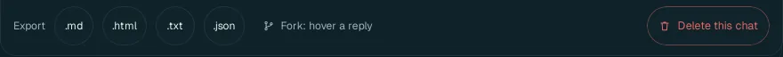
- Export: the whole Chat as Markdown, HTML, plain text or JSON, saved on your computer.
- Fork: hold the pointer over a reply and click its fork button: a new Chat starts from there.
- Delete this chat: deletes the conversation for good (it asks first).
What an agent can do#
- Work in the VM: read and write its files, run commands, install command-line tools, browse the web with its own tools. A Chat in the VM runs its tools without asking each time (Wazza OS has no ask mode); the VM is its own computer, separate from yours.
- Work in its tab's app: through the app's own tools (GIMP, Blender, ONLYOFFICE, the browser…) or by looking and clicking (Drive).
- Start other agents in other apps' tabs, at the same time (Several agents at once).
- Reach your own computer only as you allow: it can find and read your files (below your home folder), copy them into its VM and put its results on your computer (its file tools). These copies follow your rules in Settings › Files & sharing (into the VM: allowed by default; out of it: Wazza OS asks you), and seeing or using your screen needs Computer Control.
From the command line#
$ wazza --gui chat-transcript --tab t5 --last 4
$ wazza --gui chat-model set openrouter/xiaomi/mimo-v2.6-flash
$ wazza --gui chat-queue list --tab t5Reading a Chat, setting the default model, the queued messages: The command line › Chats.